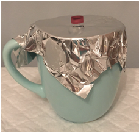

03 Mitocondrial DNA Sequencing - DNA Extraction (at home)
This is a protocol outline for obtaining DNA from cheek cells at home. This DNA will be sequenced for our Mitochondrial DNA experiment.
Protocol
Materials
Note: You will need some household items to complete this lab. Please plan to do this lab on Sunday 22nd and place in the lab refrigerator for use in class on the 24th (no class on the 23rd).
Student Provided
- One unopened 250 mL (8 oz) bottle of water
- 1/4 teaspoon table salt
- Disposable plastic/paper cup (reusable cups cannot be used because they can contain other people’s DNA)
- A way to boil water/kitchen access
- Permanent marker
- Mug/thermos
Materials provided in your at-home kit
- Empty 1.5-mL clear “cheek cells” microcentrifuge tube (1 per person)
- 100 µL 10% Chelex solution in a 1.5 mL red screw-cap tube
- Green syringe
- Large, wrapped pipette tip (to make a transfer pipette; 1 per person)
- Aluminum foil (1 square per person)
- Gloves
Steps
Note: Remember to wash your hands before and after the experiment
Note: It is best not to do this soon after eating/drinking/chewing gum,
etc. If possible do this at least an hour after doing any of those things.
-
Prepare 0.9% saline solution by adding ¼ teaspoon of table salt to a 250 mL (8 oz) bottle of water. Shake well to mix.
-
Pour about 10 mL (2 teaspoons) of 0.9% saline solution into a disposable cup.
-
Obtain cheek cells by swishing the 10 mL of 0.9% saline solution vigorously for one minute. After the minute, spit it back into the disposable cup.
-
Fill up a 1.5-mL clear “cheek cells” tube with the cell/saline mixture by carefully pouring and label it with your sample identification number (Your sample number will be assigned from this spreadsheet).
-
Place the closed cheek cell tube through a sheet of aluminum foil and place the foil over an empty mug so that the tube is held upright. Sit the tube upright at room temperature for 30 minutes. The cells will fall to the bottom.

-
After the cheek cells have settled on the bottom of the tube in a loose pellet, carefully remove the liquid above the cells by slowly pouring out the supernatant into the disposable cup. About 100 µL of concentrated cells will remain. The bottom gradation on the tube is at 100 µL.
-
Using the homemade transfer pipette (green syringe + large tip removed from its wrapping), transfer all the concentrated cheek cells to the red-capped tube containing 100 µL of 10% Chelex and shake it to mix it well.
-
Boil water and pour into a mug so it is nearly to the top.
-
Place the closed Chelex/cell tube through a sheet of aluminum foil and place it over the mug so the part of the tube with the Chelex/cell mixture is in the boiling water.
-
Let the sample tube sit in the very hot water for 5 minutes. It is not necessary to keep the water boiling.
-
Remove the Chelex/cell tube from the hot water and let the Chelex settle to the bottom of the tube for about 5 minutes.
-
Label the red-cap Chelex/DNA tube with your sample identification number on the top and side with marker.
-
Keep the Chelex/DNA tube in a cool place or refrigerator. Bring it with you to school on Monday the 23rd and place in the rack in the silver/steel refrigerator in the designated tube rack. Remember, your tube must be clearly labeled on you risk having a mixup.